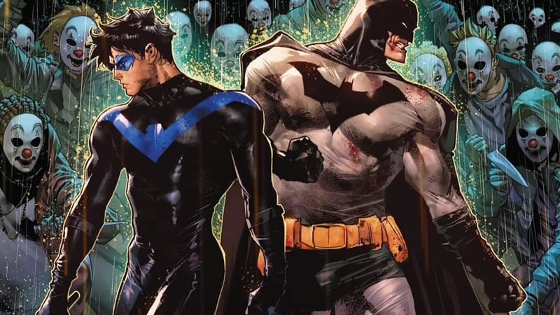

O herói mais esperto.
Batman é o justiceiro da cidade!
O brabo dos morcegos.
Noticias!!!
Batman prende coringa na prisão de segurança maxima de Gotham city!
O ocorrido aconteceu dia 23/01/2026, Após muito tempo de destruição e caos o vilão Coringa finalmente foi
preso pelo Cavaleiro das trevas
O vilão foi encontrado em um Hospital abandonado fazendo venenos para matar as pessoas na festa da cidade, mas o Batman descobriu tudo antes dos planos do Coringa derem certo e com muito preparo capturou o Coringa.
Leia Mais!Novo casal Anunciado!!!
Batman e mulher-gato Anunciam seu casamento! Após a vitória do Batman contra o Coringa.
Nesse dia 29/01/2026 foi anunciado o casal do ano! Batman e mulher-gato foram vistos se beijando no topo
de um prédio de Gotham.
Batman vence o Superman e é definido o herói mais forte.

Com muito preparo e inteligência Batman derrota Superman! nesse dia 02/02/2026
Após uma luta muito intensa entre Batman e Superman foi decretada a vitória do Batman em cima do
Superman.
Dick Grayson se separa de Batam e se torna o Asa Noturna!

Dia 10/02/2026 tivemos uma novidade na área, Dick Grayson se separou de Batman por motivos desconhecidos e agora está ajudando a cidade como Asa Noturna.
Leia Mais!Acabou!!!

Após dois anos de relacionamento Batman e Mulher-gato se separam por motivos desconhecidos, Nesse dia 05/02/2028 o Batman é visto chorando pós termino com Mulher-gato.
Leia Mais!Após momento triste de Batman Coringa foge da prisão!

No dia 07/02/2028 Coringa foge da prisão após descobrir termino de Batman e aproveita momento trágico na vida do cavaleiro das trevas.
Leia Mais!